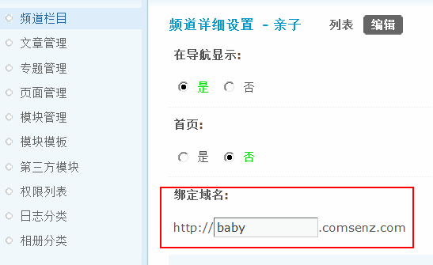

域名设置
Discuz! 提供了门户、论坛、群组、家园、频道、专题、论坛版块、论坛分区、个人空间、单个群组以及手机的二级域名绑定功能。
下面为大家介绍如何开启和绑定二级域名。
一、门户、论坛、群组、家园、手机的域名如何绑定
操作路径：【后台】=>【全局】=>【域名设置】
选择【应用域名】 如下图所示：
可以绑定门户、论坛、群组、家园、手机的二级域名，上图中已给出了范例，其中“默认” 是指其它没有绑定域名时访问的域名，绑定域名必须添加此项。
完成以上设置后还需要通过 FTP 编辑 config_global.php 文件才能实现多域名间的同步登录。
修改方法： 打开 ./config/config_global.php 中进行设置，打开这个文件找到下面的代码：
[code]$_config[‘cookie’][‘cookiedomain’] = ‘’;[/code]
大概在59行左右位置
修改为以下代码样式
[code]$_config[‘cookie’][‘cookiedomain’] = ‘.discuz.net’;[/code]
这里需要注意：前面不需要http://
同时还要注意：域名前有一个“ . ”
完成以上设置后 二级域名就可以使用了。
二、如何开启个人空间与单个群组的二级域名
1、个人空间、群组的二级域名开启后需要到根域名设置中设置群组、个人空间的根域名。
操作路径：【后台】=>【全局】=>【域名设置】
选择【根域名设置】 如下图所示：
例：用户申请xxx.discuz.net,根域名填：discuz.net
注意：个人空间域名必须在个人主页默认皮肤为“个性化DIY风格”下才有效。 操作路径：【后台】=>【界面】=>【界面设置】中，全局标签下，找到“个人主页默认皮肤”选择“个性化DIY风格”。
2、 开启个人空间与群组二级域名
操作路径：【后台】=>【全局】=>【域名设置】
选择【基本设置】 如下图所示：
3、 进入个人资料页面会出现“我的空间域名”选项，点击进去就可以添加自己的域名了，如下图
4、群组同个人空间类似 以下为群组设置页面
三、论坛分区、论坛板块 如何绑定域名
1、设置根域名
操作路径：【后台】=>【全局】=>【域名设置】
选择【根域名设置】 如下图所示：
设置论坛的根域名，此处可以设置一个“二级域名或顶级域名或三级域名” 都可以，如上图所示 此处设置了一个“二级域名”
设置完此处的域名才能对论坛的分区、版块进行域名绑定
2、设置分区、版块域名
操作路径：【后台】=>【论坛】=>【版块管理】
点击版块或分区的编辑后会出现如下图所示样式
分区及版块中都出现了一个绑定域名的选项，如上图所示（此处的绑定域名只有在根域名设置后才出现，绑定域名必须先执行上面所讲的第一步）
此处添写你要绑定的域名就可以了。
分区同版块设置同上
四、如何设置频道域名
1、设置根域名
操作路径：【后台】=>【全局】=>【域名设置】
选择【根域名设置】 如下图所示：
2、设置频道域名
操作路径：【后台】=>【门户】=>【频道栏目】
选择创建或编辑频道栏目来设置域名，如下图
此处要注意一点，频道域名只能绑定频道的根目录。
点击编辑后，即可绑定域名：
频道域名绑定完成
五、如何为专题绑定域名
1、设置根域名
操作路径：【后台】=>【全局】=>【域名设置】
选择【根域名设置】 如下图所示：
2、为专题设置二级域名
当创建专题时，就可以设置该专题的二级域名：